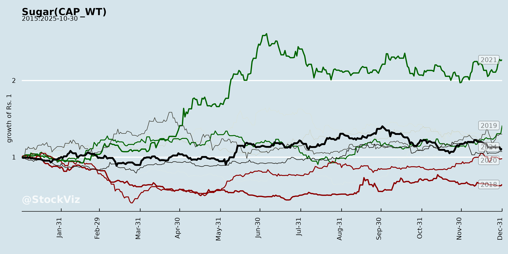
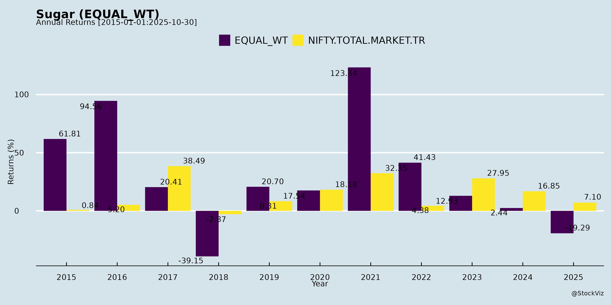
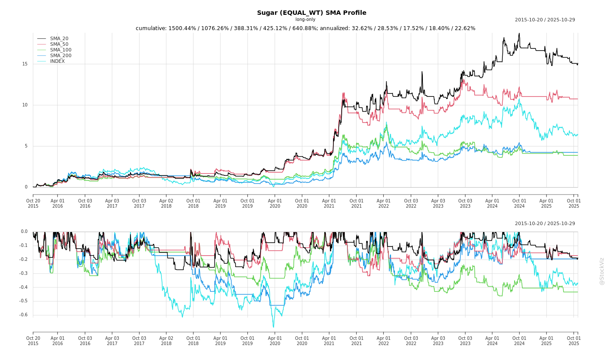
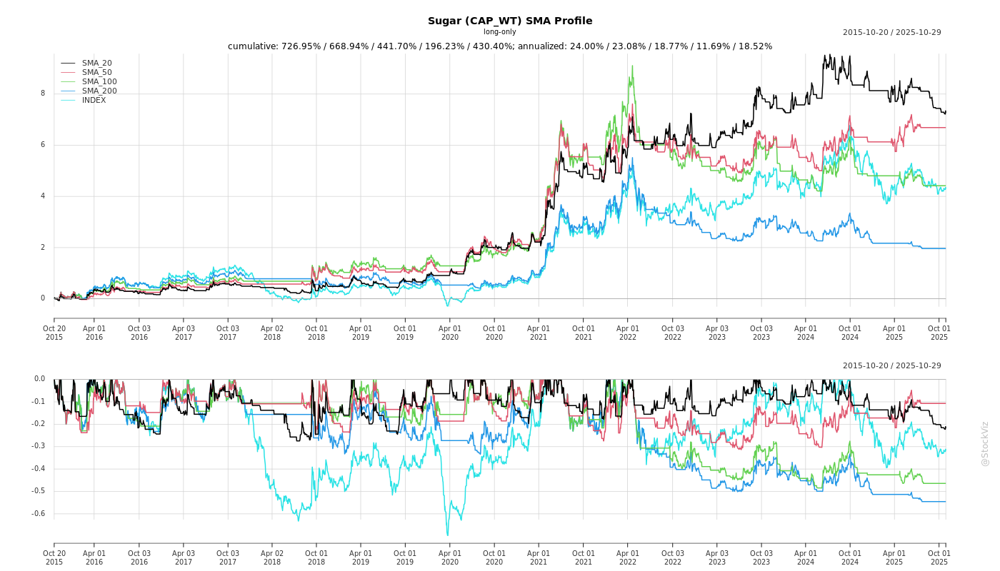
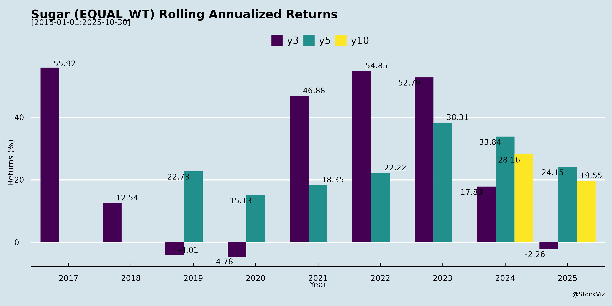
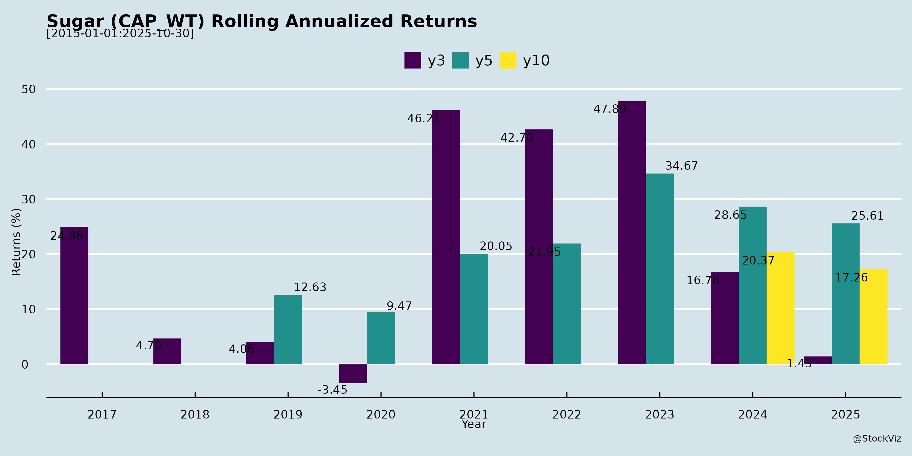

Sugar
Industry Metrics
February 20, 2026
Annual Returns



Cumulative Returns and Drawdowns
SMA Scenarios


Current Distance from SMA
Rolling Returns


Market Cap
EBIT (% of Industry Total)
Revenue (% of Industry Total)
AI Summaries
Analyst
asof: 2025-11-29
Indian Sugar Sector Analysis (Based on Q2/H1 FY26 Earnings Transcripts)
The analysis draws from earnings calls of key players like Balrampur Chini Mills (BCML), Zuari Industries, Dhampur Bio Organics (DBOL), and related announcements. FY26 sugar season outlook shows production rising to ~31 MT net (post-ethanol diversion), with surplus stocks (~6 MT closing), stable consumption (28.5 MT), and policy interventions like 1.5 MT exports. Sector faces cost pressures but benefits from diversification.
Headwinds
- Rising Cane Costs: UP SAP hiked ₹30/quintal to ₹400 (early variety); FRP up 16% in 3 years. Mills highlight lag in sugar price pass-through, squeezing margins (e.g., DBOL’s COP ~₹35-39/kg expected).
- Lower Recoveries: UP/West UP hit by red rot, black bugs, pests (e.g., DBOL net recovery down 93 bps to 9.55%; industry-wide 0.7-0.8% drop).
- Ethanol Policy Squeeze: Sugar sector allocation at 28% (289 Cr L); 72% shift to grain/maize. Stagnant prices (Juice/B-heavy) amid higher cane costs; underutilized capacity (industry ~1,800 Cr L vs. demand ~1,500 Cr L).
- Surplus Pressure: Higher output in Maharashtra/Karnataka; global surplus (189 MT, +4.7% YoY) crashing intl. prices (ICE raw at 16.5¢/lb, down 16% YTD).
- Near-term Profitability: Weak Q2 margins despite volume/realization gains (e.g., BCML/Zuari offset by seasonality; DBOL PAT loss ₹19 Cr).
Tailwinds
- Export Relief: Govt quota of 1.5 MT (vs. industry ask 2 MT); early announcement aids planning, eases stocks/interest costs (esp. Maharashtra/Karnataka).
- Realization Support: UP sugar ~₹4,050/quintal; power tariff hikes (UPPCL revision adds ₹6 Cr for Zuari).
- Diversification Gains: Ethanol production up (Zuari +44% QoQ); country liquor growth (DBOL +45% cases); power output higher (DBOL +12%).
- Policy Dialogue: UP govt relief expected (liquor price/quantum tweaks, rebates); central ethanol price hike hopes amid farmer agitation.
- Crushing Outlook: 7-8% higher for BCML; early starts (Zuari/DBOL post-Diwali).
Growth Prospects
- Production Expansion: 34.5 MT gross (+ve from Maharashtra +39%, Karnataka +16%); UP stable/yields improving via varietal shift (e.g., from Co-238).
- Ethanol Blending: At 18.8% (May peak 19.8%); roadmap to E22+ (BIS standards); sugar mills eyeing 45-50% share via reservations.
- Value-Added Plays: PLA/biodegradables (BCML capex ₹1,093 Cr); grain/molasses dual-feed (DBOL 100 KLPD conversion); real estate/DM models (Zuari GDV ₹2,900 Cr); branded sugar/spirits.
- Capacity Utilization: Distilleries at 80-85% (Zuari 311 days); organic/inorganic sugar/ethanol expansion (Zuari targets 1,000 KLPD).
- Long-term: Sustainability mandates, exports, power/spirits (10-12% EBITDA sustainable per Zuari).
Key Risks
- Policy Uncertainty: Ethanol price revisions/export quantum delays; grain favoritism (78% allocation); blending targets slippage.
- Agri Risks: Pests/diseases (red rot/black bug spillover); erratic monsoons/acreage drop (UP -3-7%).
- Cost/Price Volatility: Cane arrears, maize price spikes/soft DDGS; global sugar crash impacting exports.
- Financial: Debt (e.g., DBOL LTDE 0.3x, Zuari deleveraging via ₹800 Cr inflows); transfer pricing opacity.
- Execution: New projects (PLA commissioning Oct’26); competition from grain ethanol/new mills (e.g., Bindal).
Summary: Indian sugar sector navigates surplus/cost headwinds with policy tailwinds (exports, ethanol hopes) and diversification (ethanol/power/spirits ~20-30% revenue). Growth hinges on recovery rebound (target 10-11%) and ethanol pricing (10% cane crush diversion ideal). FY26 EBITDA margins could stabilize at 6-12% if sugar ~₹40/kg holds; risks tilted to policy/agri. Bullish medium-term on blending mandates/export logic, but near-term volatile (worst behind per BCML). Investors eye Q3 clarity on crushing/recoveries.
Financial
asof: 2025-12-01
Indian Sugar Industry Analysis (Q3 FY25 Insights from Listed Players)
Based on Q3 FY25 (quarter/9M ended Dec 31, 2024) financial results of key players (Balrampur Chini, Triveni Engg., Shree Renuka, Bajaj Hindusthan, Dalmia Bharat Sugar, DCM Shriram Ind., Zuari Ind., Uttam Sugar, Dhampur Sugar, Avadh Sugar, Magadh Sugar, Dwarikesh Sugar), here’s a synthesized view of headwinds, tailwinds, growth prospects, and key risks. The industry remains seasonal (crushing Oct-May), with Q3 profits boosted by peak crushing, but variability persists.
Headwinds (Challenges Pressuring Margins/Performance)
- Seasonal Volatility & Off-Season Losses: Q2 often loss-making (e.g., Balrampur ₹584L loss, Triveni ₹300Cr loss); Q3 profits vary (Balrampur ₹80Cr profit). Inventory swings massive (e.g., Balrampur ₹53K Cr inventory drop).
- Pending SAP Hike: UP govt. delay in 2024-25 sugarcane SAP forces use of 2023-24 rates (noted by Balrampur, Uttam, Dhampur, Dwarikesh), inflating costs amid rising cane dues/low availability.
- High Finance Costs: ₹6300L-₹8362L in 9M for majors (Balrampur, Renuka); debt overhang (Renuka negative net worth ₹179B Cr).
- Subdued Sugar Prices/Recovery: Lower recovery/under-utilization (Bajaj cites cane dues); excess production risks price crash.
- Forex/Commodity Volatility: Renuka forex loss ₹519L; derivative gains/losses (Renuka ₹3369L gain).
Tailwinds (Positive Supports)
- Peak Crushing Boost: Q3 revenues up YoY (Balrampur +3%, Uttam stable, Dhampur +22%); strong EBITDA (positive for most).
- Debt Reduction: Bajaj cleared sustainable debt (finance cost down); others refinancing/internal accruals.
- Policy Easing: Centre lifts ethanol curbs (B-heavy molasses/syrup); MSP hike to ₹39-40/kg expected (Bajaj/Dhampur); ethanol price revisions anticipated.
- Diversification Gains: Distillery/power stable (Balrampur distillery ₹10K Cr rev); co-gen/spirits contribute (Uttam ₹28K Cr distillery rev).
- Subsidy/Support: Renuka/Zuari cite parent guarantees for liquidity.
Growth Prospects (Forward Opportunities)
- Ethanol Expansion: 20% blending push; distillery ramps (Balrampur ₹90K Cr 9M rev, Uttam acquired subsidiary for 53% stake).
- Capacity Additions: Triveni ₹60Cr power transmission capex (to ₹700Cr); Dalmia raised crushing to 13.5K TCD.
- Diversification: Power co-gen (Avadh/Magadh ₹9K-₹11K Cr rev); chemicals/spirits (Dhampur potable spirits ₹564 Cr); realty/infra (Zuari).
- Revenue Trajectory: 9M rev up 5-20% YoY for most (Balrampur flat at ₹391K Cr but sugar up); full-year FY25 guidance positive (MSP/ethanol tailwinds).
- Export/Trading: Stable forex gains; PLA ventures (Balrampur).
| Company Snapshot (9M FY25 Profit/Loss, ₹ Cr) | Strong Performers | Laggards |
|---|---|---|
| Balrampur (₹169 profit) | Dhampur (₹38), Avadh (₹162) | Renuka (-₹39), Bajaj (-₹218) |
| Triveni (₹251 pre-assoc.) | Uttam (₹23), Dwarikesh (-₹24) | Zuari (-₹7362, volatile) |
Key Risks (High-Impact Threats)
- Policy/Regulatory: SAP delays/dues backlog (Bajaj going concern note); GST demands (Renuka ₹1213 Cr contested); subsidy disputes (Zuari MCFL urea ₹291 Cr).
- Liquidity/Cane Supply: High working capital needs; cane shortages (Bajaj/Balrampur cite dues/under-crush).
- Commodity Price Swings: Sugar oversupply/MSP uncertainty; ethanol policy flux.
- Impairments/Investments: Furniture losses (Zuari ₹46 Cr); strategic investments at risk (Bajaj ₹252 Cr).
- Forex/Interest Rates: High exposure (Renuka forex ₹519L loss); rising rates hurt debt-heavy firms.
- Weather/Climate: Cane yield risks from monsoons/droughts.
Overall Outlook: FY25 poised for recovery (crushing tailwinds, ethanol/policy boosts), but Q4 hinges on SAP/MSP. Margins ~5-8% sustainable with diversification; monitor debt (industry D/E 0.3-0.9x) and cane economics. Bullish on ethanol leaders (Balrampur, Uttam); cautious on pure-play sugar (Renuka, Bajaj).
General
asof: 2025-12-03
Indian Sugar Sector Analysis: Headwinds, Tailwinds, Growth Prospects, and Key Risks
Based on the provided documents from key players (Balrampur Chini, Triveni Engineering, Shree Renuka, Bajaj Hindusthan, Dalmia Bharat, DCM Shriram, Zuari, Uttam Sugar, Dhampur, Dwarikesh, Avadh, and Magadh Sugar), the Indian sugar sector exhibits a mix of operational resilience, strategic restructuring, and challenges amid commodity volatility. The sector benefits from ethanol blending mandates but faces legacy issues like debt and losses in subsidiaries. Below is a structured summary.
Tailwinds (Positive Factors)
- Ethanol/Distillery Focus & Government Support: Strong emphasis on distilleries (e.g., Uttam Sugar’s 350 KLPD capacity, 440k BL sales in H1 FY26). Ethanol blending program drives revenue (Uttam: ₹55/L realization). Power cogeneration adds stable income (Uttam: 97.79 lakh KWH exported in H1 FY26).
- Capacity Expansion & Efficiency Gains: Uttam expanded crushing to 27,000 TCD; ongoing growth (e.g., 2011-2025 journey shows multi-fold increases). Branded/specialty sugars growing (Uttam: 3x pharma sugar, 10x invert; monthly sales up to 59k Qtls).
- Corporate Restructuring for Value Unlock: Triveni demerging profitable PTB (gears/defense, ₹37k Cr assets, ₹12.5k Cr profit expected) into listed entity; DCM Shriram NCLT approval. Improves focus (sugar/distillery core vs. high-growth segments).
- Debt Reduction Initiatives: Bajaj trust sold 3.11 Cr shares (₹68 Cr proceeds) for loan repayment. Preference share redemptions (Zuari).
- ESG & Governance: Balrampur’s ‘Very Good’ ESG rating (76/100); routine compliances (AGMs, IEPF transfers, director re-appointments).
- Financial Turnaround: Uttam Q2 FY26 PAT ₹1.48 Cr (vs. loss last year); H1 revenue +38%, EBITDA +78%.
Headwinds (Challenges)
- Loss-Making Entities & Negative Equity: Triveni’s Sir Shadi Lal (merger target): ₹446 Cr FY25 loss, -₹21k Cr net worth, high debt (₹40k Cr). Drag on consolidateds.
- High Debt & Interest Burden: Uttam interest ₹30 Cr H1 FY26; Triveni borrowings ₹1.4k Cr. Sector-wide leverage strains amid high rates.
- Inventory Build-Up & Price Pressure: Uttam sugar inventory 6.64 lakh Qtls (vs. 25.37 FY25); realizations ₹4,102/Qtl (up but volatile).
- Operational Variability: Cane crushing fluctuates (Uttam: 325k-432k Qtls seasonally); distillery tied to syrup/B-heavy.
- Compliance Burden: IEPF transfers (Dhampur), physical notices (Avadh/Magadh), postal ballots (Dwarikesh).
Growth Prospects
- High: Ethanol/power as 40-50% revenue mix; blending targets (20% by 2025) to sustain ₹55-56/L realizations. Specialty sugars (pharma, invert, branded) scaling (Uttam 10x growth).
- Demerger Benefits: Triveni PTB listing unlocks ₹93 Cr PAT; independent focus on defense/gears.
- International Expansion: Dalmia acquiring 51% in Tanzania sugar project (US$1 Mn investment).
- Capacity & Diversification: Uttam 27k TCD, 122 MW power; branded sales tripling. Sector FY25 revenues ₹18k Cr+ (Uttam alone).
- Projections: Uttam-like peers could see 15-20% revenue CAGR via ethanol/export; post-scheme efficiencies (Triveni net revenue dip short-term but long-term unlock).
Key Risks
- Commodity Volatility: Sugar prices (₹3,500-4,100/Qtl), ethanol tenders, cane availability (weather/monsoon-dependent).
- Scheme Execution: Triveni complex (NCLT meetings Dec 2025); integration risks post-amalgamation/demerger.
- Debt Sustainability: High borrowings (Triveni ₹1.9k Cr current); interest rate hikes could erode margins (Uttam EBITDA 6.6% H1).
- Regulatory/Policy: Sugar export quotas, ethanol pricing changes, subsidy delays. SEBI compliance (KYC, demat mandates).
- Loss Drag: Merging unprofitable units (Sir Shadi Lal) risks dilution; promoter sales (Bajaj) signal liquidity needs.
- Market/Competition: Inventory overhang, global sugar surplus; branded segment nascent (Uttam ~10% sales?).
Overall Summary
Bullish Long-Term (Tailwinds Dominate): Sector poised for 15-25% growth via ethanol (₹2.5k Cr+ annual value-add), restructurings (value unlock ₹10k+ Cr assets), and expansions. Uttam exemplifies turnaround (PAT +290% YoY). Short-Term Cautious (Headwinds Weigh): Debt/losses cap multiples; schemes add uncertainty (Triveni meetings Dec 2025). Recommendation: Favor efficient players (Uttam, Balrampur) with distillery/ethanol exposure; monitor Triveni post-scheme. Risks tilted to policy/volatility (mitigate via hedging/diversification). Sector P/E ~15-20x; upside on 20% blending.
Data as of Oct-Dec 2025 filings; FY26 H1 trends positive.
Investor
asof: 2025-11-29
Indian Sugar Sector Analysis: Headwinds, Tailwinds, Growth Prospects, and Key Risks
The Indian sugar sector, as reflected in Q2/H1 FY26 earnings transcripts and investor presentations from key players (Balrampur Chini Mills, Zuari Industries, Dhampur Sugar Mills, Dwarikesh Sugar, Avadh Sugar & Energy, Magadh Sugar & Energy, etc.), faces a mixed outlook. FY26 sugar season (SS25-26) projections indicate gross production of ~34-35 MnT (up from 29.9 MnT in SS24-25), with net availability ~31 MnT post-ethanol diversion (3.4-3.5 MnT), against consumption of 28.5 MnT, leading to ~6 MnT closing stocks. Realizations hover at ₹3,900-4,100/quintal, supported by blending progress (19.17%) and policy tweaks, but margins are squeezed. Below is a structured summary:
Headwinds (Key Pressures)
- Rising Input Costs: UP SAP hiked ₹30/quintal to ₹400 (early varieties), FRP at ₹355 (10.25% recovery). Cane costs up 16% in 3 years, unmitigated by sugar/ethanol price revisions, eroding margins (e.g., production cost ~₹35-39/kg).
- Lower Recoveries & Yields: Red rot, black bug pests, and weather hit recoveries (down 0.7-0.93% YoY in UP; company-specific drops to 9.55-11.23%). Early season closures (e.g., Dwarikesh, Dhampur).
- Surplus & Inventory Build-Up: Opening stocks ~5 MnT; closing ~6 MnT despite 1.5 MnT export quota (vs. industry request for more). Limited exports from North India.
- Ethanol Policy Shifts: Stagnant prices (B-heavy/juice routes); grain-based favored (72% allocation, 78% in some tenders). Sugar sector got only 28-34% (289 CrL).
- Operational Inefficiencies: High fixed costs unabsorbed in off-season; early crushing delays.
Tailwinds (Supportive Factors)
- Production Rebound: Maharashtra (+39% to 13 MnT), Karnataka (+16% to 6.4 MnT); UP stable at 10.3 MnT. Acreage up slightly (57.35 lakh ha). Strong monsoon aids SS25-26.
- Improving Realizations: Sugar at ₹4,000+/quintal (up 4-5% YoY); power tariffs revised +₹0.90/unit (UPERC).
- Ethanol Blending Momentum: 19.17% achieved; tenders for 1,050 CrL (ESY25-26). Companies ramping grain/molasses flexibility (e.g., dual-feed conversions).
- Government Relief: Export quota (1.5 MnT), potential ethanol hikes, UP packages (liquor price cuts, rebates). Sugar Control Order regulates Khandsari/by-products.
- Diversification Gains: Country liquor +45% YoY (Dhampur); power exports up; branded sugar/value-add (refined, UPML).
Growth Prospects
- Ethanol Expansion: Blending to E20+ (BIS approvals for E22-E30); new capacities (180-325 KLPD), grain integration. SAF/ATF potential; companies targeting 1,000 KLPD+.
- Capacity Upsides: De-bottlenecking (e.g., Avadh +3,000 TCD, Dwarikesh +500 TCD); crushing expected +7-8% (Balrampur). Dual-feed for year-round ops.
- Value-Addition & Exports: PLA/bioplastics (Balrampur ₹1,093 Cr invested); real estate/DM models (Zuari ₹2,900 Cr GDV). Exports viable if premiums hold.
- Cane Improvements: Varietal shifts from Co-0238 (red rot-prone); pest management; acreage stabilization. SS25-26 recovery/yield uptick expected.
- Sustainability Push: Bioethanol, power co-gen (74-96 MW), mandates for eco-plastics. Deleveraging (e.g., Zuari ₹800 Cr inflows).
Key Risks
- Policy/Regulatory: Delayed ethanol hikes, export caps, grain bias (risk of underutilization; maize prices volatile).
- Agri/Weather: Disease/pest recurrence (red rot/black bug), monsoon variability; acreage shifts to maize/pulses.
- Price Volatility: Surplus pressures realizations; global surplus (2.2 MnT) caps exports (raw sugar <16.5¢/lb).
- Financial/Operational: Debt (₹300-1,800 Cr across firms), margin erosion (EBITDA 3-10%), inventory valuation risks. CAPEX overruns.
- Competition: Grain distilleries (1,800 CrL capacity vs. 1,500 CrL demand); new mills (e.g., Bindal).
Overall Outlook: Cautiously Optimistic. Near-term headwinds from costs/surplus cap margins (EBITDA ~6-12%), but tailwinds from production rebound, blending, and policy relief support recovery in H2 FY26. Growth hinges on ethanol reforms and agri improvements; risks tilted toward policy/weather. Sector PE ~15-20x; focus on diversified players (ethanol/power). Monitor Oct-Nov crushing starts for clarity.
Press Release
asof: 2025-11-29
Indian Sugar Industry Analysis: Headwinds, Tailwinds, Growth Prospects, and Key Risks
Based on the provided press releases from key players (Balrampur Chini Mills, Shree Renuka Sugars, Dalmia Bharat Sugar, Zuari Industries, Dwarikesh Sugar, Avadh Sugar & Energy, Magadh Sugar & Energy, and others) for Q2/H1 FY26 (ended Sep 2025) and prior periods, the Indian sugar sector shows resilience amid challenges. Performance is mixed: strong revenue growth (e.g., Balrampur +29%, Dalmia +7%) but profitability pressures (losses or PAT declines in most). Industry projections indicate a rebound in sugar production post a weak 2024-25 season (26.1 MMT net). Below is a structured summary.
Headwinds (Key Challenges Pressuring Margins)
- Rising Sugarcane Costs: FRP/SAP hikes (e.g., ₹30/qt in UP for 2025-26) without sugar MSP or ethanol price revisions, eroding margins. Operational costs up due to lower recoveries (e.g., Dalmia, Shree Renuka).
- Low Cane Availability/Crushing: Poor crops in Maharashtra/Karnataka (Shree Renuka crushing -17-20%); no crushing in Q2 for some (Dwarikesh), leading to under-absorption of fixed costs and losses (e.g., Dwarikesh LAT widened to ₹33cr in Q2).
- Ethanol Pricing Stagnation: No hikes in juice/B-heavy routes despite 2+ years of cost inflation; lower allocations (Dalmia: 1050cr L vs. 1776cr offered, grain-heavy mix).
- Seasonal Weakness: Q2 typically low (off-season); EBITDA/PAT down YoY for most (e.g., Dalmia PAT -56%, Avadh/Magadh losses).
- High Finance Costs/Debt: Persistent in standalone results (e.g., Shree Renuka down 13% but still high; Zuari reduced borrowing costs).
Tailwinds (Positive Supports Driving Recovery)
- Sugar Price Realizations: NSR up 3-4% YoY (Dalmia ₹39.9/kg; Dwarikesh ₹3,963/qt); prices rebounding to ₹4,100/qt from ₹4,000.
- Power Tariff Revisions: UPERC hike (~₹0.90/unit w.e.f. Apr 2024) boosted profitability (Balrampur, Dalmia, Avadh).
- Distillery/Ethanol Strength: Volumes up (Balrampur/Dalmia +3-12%; Shree Renuka +13%); grain-based ops resilient.
- Export Policy: Govt allows 1.5 MMT exports for 2025-26 (Balrampur), with closing stocks ~6 MMT vs. consumption 28.5 MMT.
- Cost Efficiencies: Lower finance costs (Zuari -13bps, Shree Renuka -13%); early crushing starts (Zuari).
| Metric | Q2/H1 FY26 Trends |
|---|---|
| Revenue Growth | +7-29% YoY (Balrampur, Dalmia) |
| EBITDA | Mixed: Balrampur +145%, but Dalmia -16% |
| PAT | Losses narrowed (Shree Renuka -52%) or flat/declines |
Growth Prospects (Opportunities for Expansion)
- Production Rebound: 2025-26 net sugar output projected 30-31 MMT (+19% from 26.1 MMT); conducive weather, despite area decline (Balrampur, ISMA estimates up to 34.9 MMT gross).
- Ethanol Blending Push: Rising demand; capacity expansions (Avadh +3,000 TCD; Magadh steam savings).
- Diversification: PLA/biochemicals (Balrampur ₹1,093cr invested); IMFL/whisky (Triveni awards); real estate/financial services (Zuari).
- Capacity/Tech Upgrades: Expansions (Avadh 13,000 TCD; Dalmia demerger approved); bioethanol JV (Zuari 180 KLPD by Nov 2025).
- Exports & By-Products: 1.5 MMT quota; power co-gen (74-175 MW across firms); dividends signal confidence (Balrampur ₹3.50/share).
- Outlook: Firm sugar prices; above-normal rainfall; policy support (MSP/ethanol hikes hoped).
Key Risks (Major Uncertainties)
- Policy Delays: Ethanol/MSP revisions critical for farmer payments/viability; surplus scenario if production exceeds estimates.
- Weather/Crop Volatility: Monsoon dependency; red-rot infestation (Dwarikesh); early flowering impacted prior season.
- Inventory & Price Volatility: High closing stocks (6 MMT projected); export reliance amid global competition.
- High Leverage: Debt-funded expansions (e.g., Dwarikesh ₹111cr for distillery); interest rate sensitivity.
- Regulatory/Allocation Shifts: Ethanol grain bias (72%); power tariff marginal hikes ahead.
- External: Import competition, forex (ECBs), geopolitical factors (safe harbor notes).
Overall Summary: The sector faces near-term headwinds from cost pressures and low Q2 ops (evident in losses/PAT dips), but tailwinds like realizations, power tariffs, and production rebound provide stability. Growth hinges on 2025-26 season (early crushing underway) and policy support for ethanol/sugar. Leaders like Balrampur show outperformance via diversification; laggards (e.g., Dwarikesh) highlight regional vulnerabilities. Bullish on ethanol/export-led recovery, but risks from weather/policy persist—watch ISMA revisions and govt announcements. Industry EBITDA resilient (+2-18% YoY in leaders), signaling structural shift to green energy.
Copyright © 2023 SAS Data Analytics Pvt. Ltd. All rights reserved.